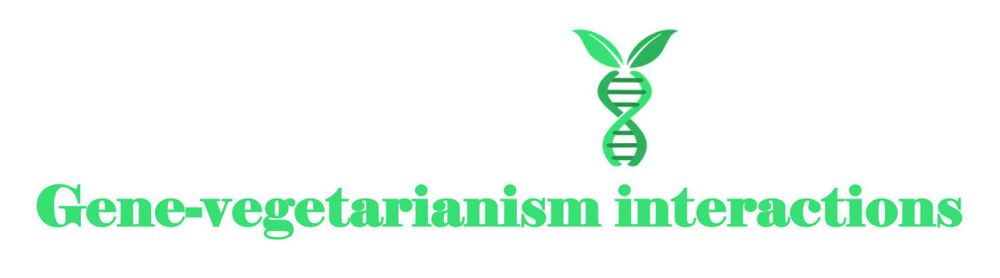

Here, you will find the code used in the manuscript,
“Gene-vegetarianism interactions detected in genome-wide
analyses across 30 serum biomarkers”
Our goal in this website was to make this study as transparent and
helpful as possible.
Please feel free to use our code and cite our
paper!
Site highlights:
Summary statistics
GWAS and GWIS summary statistics are hosted by GWAS Catalog.
[put link to those here when it becomes available]